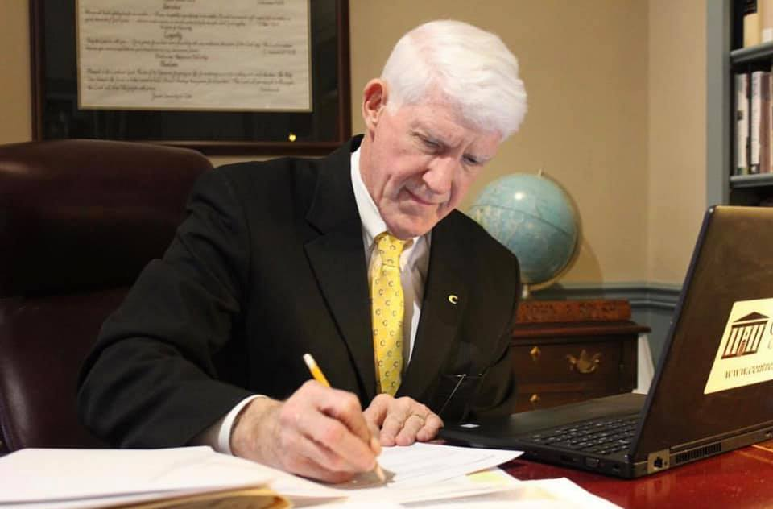

John Roush
College President

“I became the 20th president of Centre College on July 1st, 1998, which was also my 48th birthday, so I’ll never forget when this all started for me. Before coming here, I was working at the University of Richmond as Vice President, and I was actually giving some serious consideration to getting out of higher education. I had had a full and successful 20-year educational career by anyone's measure, and the prospect of doing some media or consulting somewhere in Virginia had some appeal. And, then, I get a call, and it’s from a person here at Centre College inviting me to be a candidate for the presidency of Centre. So I came out here because I knew about Centre, I knew about its quality, and I really liked the people I met. I went home and told Susie that about my experience and the mission of this institution. So, normally when you get involved in one of these presidential searches, it takes months. But, not this time; inasmuch as I, effectively, was offered the job in about 30 days...You may or may not know, but I am a person of faith – and, though I try not to wear it too much on my sleeve, I make no apology for it – and, this time I really felt like maybe Centre was where I was supposed to be. I feel blessed to have had this opportunity. I think we’ve had the time to accomplish some really good stuff, mostly making a difference for in young people’s lives.”
“Since I became president, Centre has changed in remarkable ways, and it’s changed for the better in all ways in my opinion. When I arrived, we had about 1000 students. We now have about 1450 students. When I got here we had only 10 or so students from other countries. Now there’s about 125. When I got here, Centre was a very good place, but we weren’t an especially diverse place. We were diverse in terms of socio-economics, and we still are, but we weren’t so diverse in terms of race, religion, geography, nationality, etc. Since then, the college has evolved – and, that’s the right word here – in ways that are remarkable and for the good. Together, we have accomplished what I refer to as the trifecta: there are more students from many different places, they’re of higher quality and more curious, and they’re more diverse in all ways one might measure it. Centre is a better, faster, and stronger place then when I got here. And, all of this is really a high compliment, not to me, but to all of the people who have worked at this institution to make it a better place. So, I’m really proud of what we’ve done together, including the students, to make Centre a better place and to tell the story of this institution in better and more convincing ways. And at the end of the day, the students here are the living proof. That’s why we are what we are and why we do what we do – making a difference in young people’s lives and sending those students into the world to do something that counts.”
“The future? I could see Centre creeping closer to 1500 students in the future, and we might even begin to grow out more for our study abroad program, which I think is unarguably already the best in the nation. I think we’ll continue to be a place of highest quality. And, to be clear, quality is the real driver of why young people want to attend Centre College. I think the diversity of our student population will continue to stay about what it is right now, which is strong, though these numbers may change moderately over time. We will continue to make progress on diversifying our faculty and staff – continuing our habit for finding outstanding, talented people from all persuasion who want to be part of our community.
Now, the part I can’t fully answer about the future is the ways in which our students will learn and prepare themselves for their lives of work and service. The role that study abroad now plays in the education of Centre students is extraordinary, and I believe that “study away” opportunities in several of great American cities will become more “regular” in time. Another example may be students showing up with different expectations – expecting to major in history with a minor in Spanish, and, then, be “expecting” to end up as a stockbroker on Wall Street. And, then, that same student will ask, respectfully, to the faculty and the administration: “Please help me do that.” The ways in which students study and learn has changed radically over the past two decades, and this will continue. Our “bread and butter” at Centre – deeply personal education – will continue, but there will be changes – guaranteed. The good news is that Centre will “make these changes,” but it’s really going to require us to shift our thinking. The experience and the ideas students have about how they might best prepare for their future have already started to change, and this will continue to change rapidly going forward.”
“Why is the Centre community unique? I think our students who come here, through some combination of who they are at their core and the experiences they’ve had to date, all share the commonality of having high expectations for themselves and each other. This is a good thing. I expect students to do their best, I expect them to be their best. I don’t think that’s putting the bar too high. I sometimes worry a little bit that the students aren’t always well-equipped to deal with disappointment, to deal with failure, to deal with defeat. Am I alarmed about this? No. But, it is a matter of some concern. To be clear, I want every Centre student to be safe and cared for and to experience some rich combination of successes and victories, with enough failure and disappointment to keep ‘em humble and grounded and tough-minded, if you will. If we don’t create some combination along those lines, I would argue we haven't provided a first rate education. Sometimes, a student experiences disappointment in academics or through sports or sometimes through music or theater or whatever. In the end, I want the students to believe that they couldn’t have made a better college choice, even if it wasn’t always perfect.
Let me tell you three reasons I like to be president of Centre College: students, students, students.
And, commenting on the College’s bicentennial, I hope all of us will be able to say overtime that we helped make Centre a better place. And I mean all of us- students, faculty, staff, parents, friends of the College, everyone. I know that 100 years from now, people will look back and say “What were those people even thinking?” ‘Cause they were not here among us to understand and know our hearts. But, in the next moment, I hope they look back and say we see strong evidence of how well we worked with each other, how we were kind and generous with each other, how we supported each other, and how we achieved so much! Yeah, I will be satisfied with that outcome in 2119.”